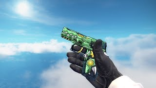
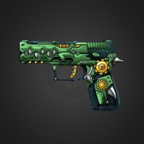
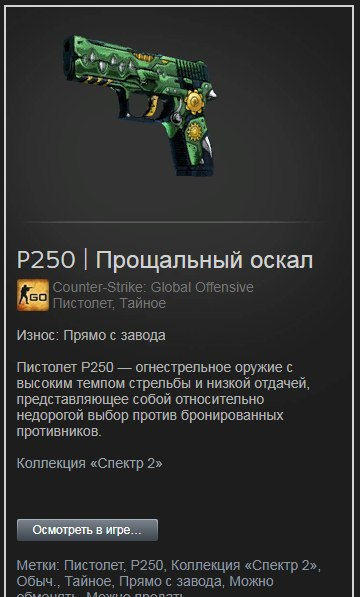
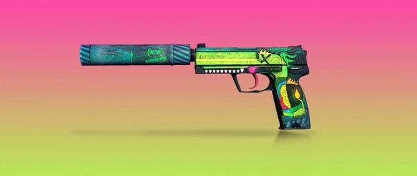

Прощальный оскал-как по мне лучший выбор в зеленых сетах, его окраска темно-зеленая с рисунком напоминаевший динозавра

Чудовищная смесь-Что могу сказать если хотите красивый сет то этот юсп будет только в плюс